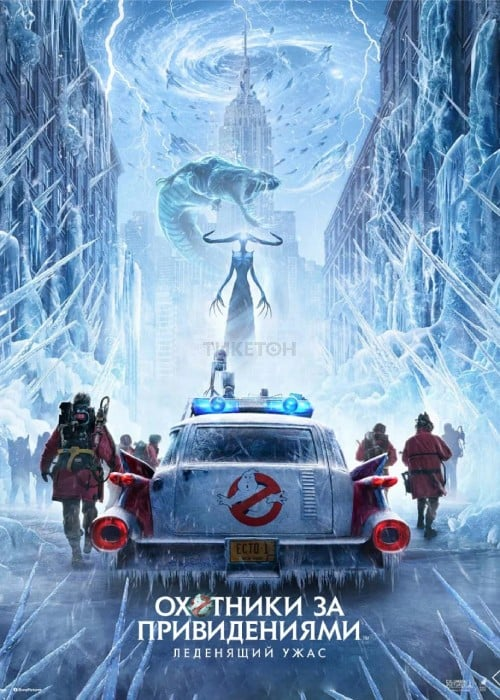

Новинки 2024 года
| Жанр: | фантастика, фэнтези, комедия, приключения |
| Дата выхода: | 2024 |
| Режиссёр: | Гил Кинан |
| Продолжительность: | 115 мин. / 01:55 |
| Бюджет: | $165 608 653 |
| Премьера в мире: | 27 марта 2024 |
| Сценарий: | Гил Кинан, Джейсон Райтман, Айвен Райтман |
| Продюсер: | Айвен Райтман, Дэн Эйкройд, Джейсон Блюменфилд |
| Композитор: | Дарио Марианелли |
| Художник: | Ив Стюарт, Тим Адамс, Эбби Беллвуд |
Американский фантастический комедийный фильм, снятый Гилом Кинаномruen в соавторстве с Джейсоном Райтманом. Продолжение фильмов «Охотники за привидениями» (1984), «Охотники за привидениями 2» (1989) и «Охотники за привидениями: Наследники» (2021), четвёртая часть по хронологии и пятая по счёту. Первый фильм франшизы, созданный без участия Айвана Райтмана, фильм будет посвящен его памяти и приурочен к 40-летию «Охотников за привидениями» 1984 года
Действие происходит через три года после событий «Охотников за привидениями: Наследники». Ветераны «Охотников за привидениями» должны объединить усилия со своими новыми партнёрами, чтобы спасти Нью-Йорк от могущественного противника, который стремится создать призрачную армию и заморозить город